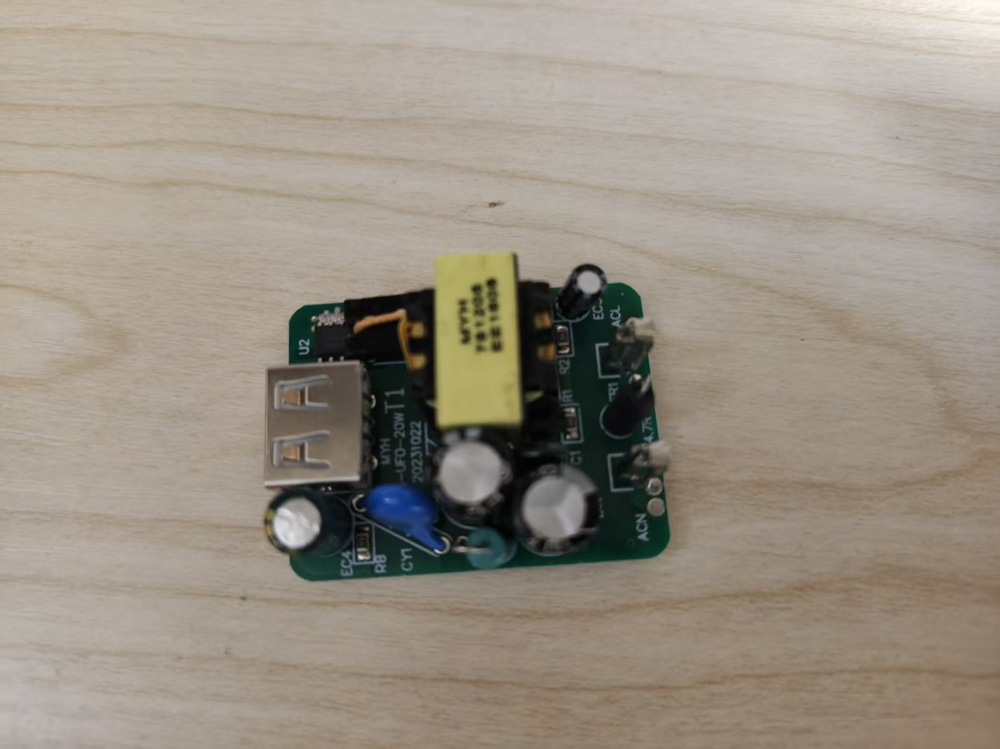
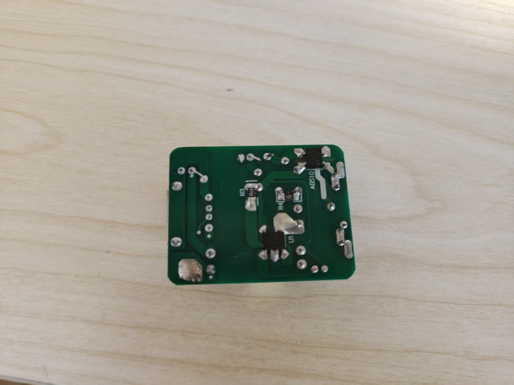
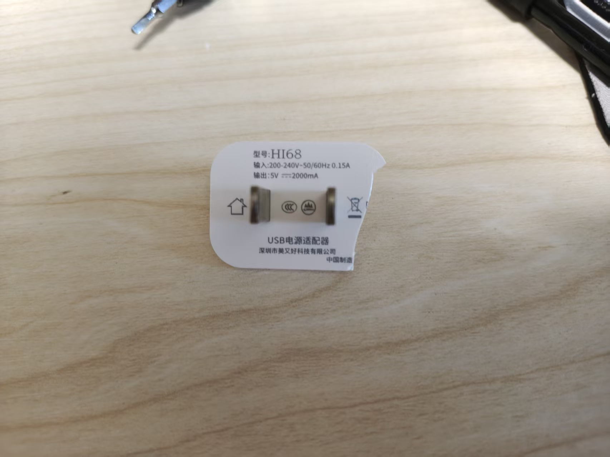
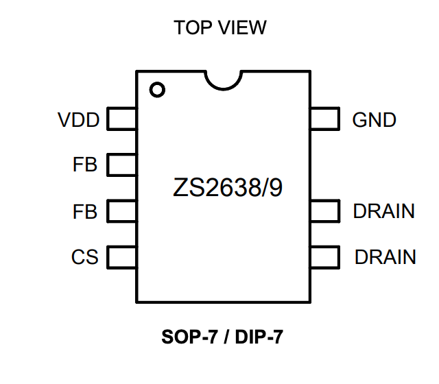

发布时间：
拆一个反激 220v交流转5V2A电源适配器
为什么拓扑是反激？因为没有发现独立输出电感，还有U1这个SOP-8封装（并少一个脚）大概率是集成高压mosfet的开关电源控制芯片（如NCP10670B、DK935）。U1有大面积铜箔连着变压器原边绕组。
T1是隔离变压器，EE1608 4 + 2 骨架。
U2左边有3个脚连在一起，右边4个脚连在一起并连着背面的大面积铜箔，铜箔连着变压器副边绕组。U2是同步整流相关器件，SOP-8封装。
ABS10是桥式整流器。
如第四张图，从引脚定义来看U1可能是ZS2638。4脚CS是电流检测，7脚连着R3(0.75Ω)送回GND。4脚和7脚用万用表蜂鸣档测应该连通。
#开关电源 #反激 #flyback #硬件



